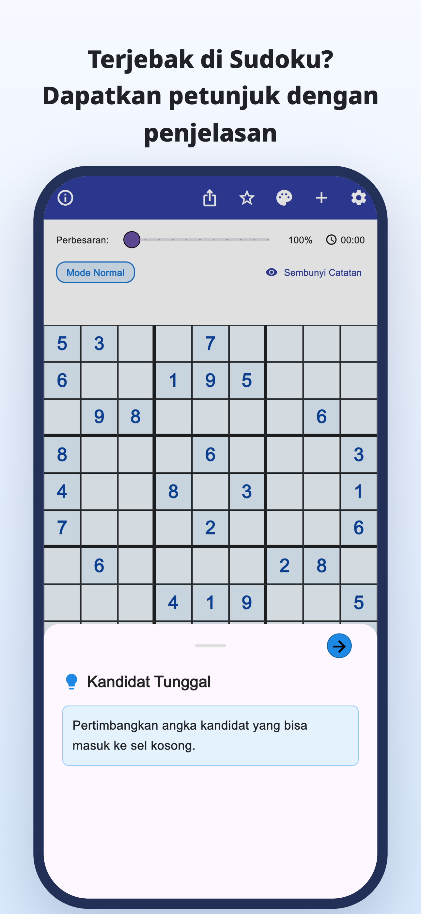
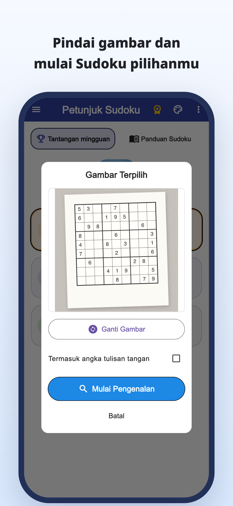
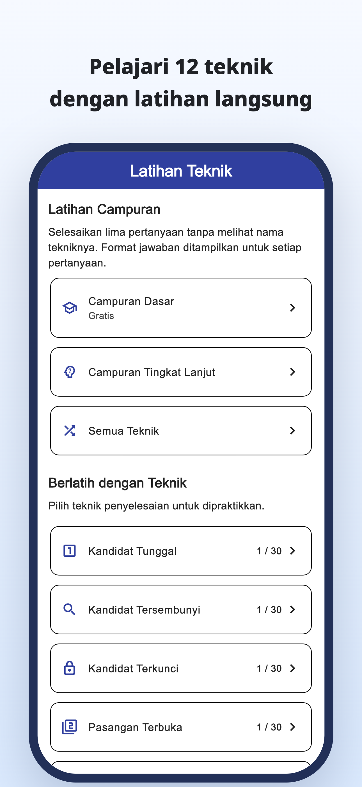
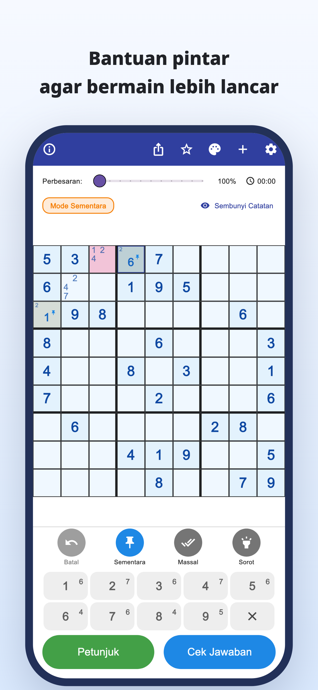
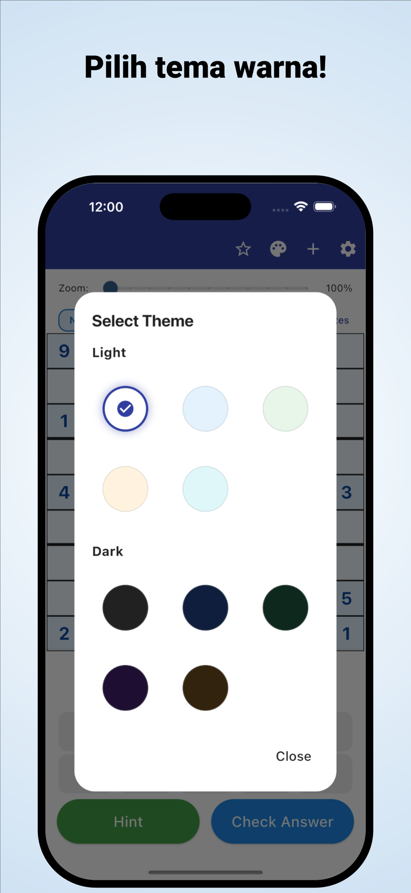

“Harus melihat ke mana lagi?”
Kamu memeriksa kotak berulang kali,
tetapi tetap buntu di bagian yang sama.
Pindai dengan kamera · Petunjuk dengan penjelasan
Pindai teka-teki dari koran dan majalah.
Pahami mengapa suatu angka cocok, lalu lanjutkan sendiri.
iPhone & Android / Unduh gratis · Pembelian dalam aplikasi





Pernah mengalami ini saat bermain?
Kamu memeriksa kotak berulang kali,
tetapi tetap buntu di bagian yang sama.
Mengapa angka itu harus di sana?
Menyalin solusi saja tidak cukup.
Kamu ingin mengambil sudoku kertas yang sedang dikerjakan
dan melanjutkannya di aplikasi.
Ubah kebuntuan menjadi petunjuk
Baca sudoku koran atau majalah dari foto dan kurangi pekerjaan memasukkan angka satu per satu.
Baca dari gambarBaca alasan di balik langkah dan gunakan untuk memikirkan langkah berikutnya, bukan sekadar mengisi jawaban.
Petunjuk dengan penjelasanJelajahi penjelasan dan latihan tiap teknik, lalu berlatih menemukannya sendiri.
Latihan teknikUntuk yang senang menemukan solusi sendiri
Impor teka-teki yang biasa kamu mainkan dan lanjutkan dari posisi terakhir.
Pahami alasan di bagian sulit, lalu lanjutkan sendiri.
Untuk pemula dan siapa pun yang ingin belajar teknik berikutnya.
Baca · Coba · Berlatih
Mulai dari browser.
Baca panduan atau mainkan satu teka-teki lengkap.
Dari catatan kandidat hingga penjelasan teknik dan latihan.
Coba selesaikan satu teka-teki dengan petunjuk saat dibutuhkan.
Temukan aturan dan keseruan menghubungkan petunjuk.
Perhatikan sel berbingkai biru dan buka petunjuknya.
Petunjuk langkah berikutnya
Periksa kandidat pada sel kosong.
Ini contoh web untuk mencoba satu langkah. Tampilan aplikasi berbeda.
Saat buntu dalam sudoku.
Unduh Petunjuk Sudoku
Unduh gratis · Pembelian dalam aplikasi
Aplikasi dapat diunduh dan dicoba gratis. Petunjuk, pemeriksaan jawaban, dan pemindaian gambar memiliki batas penggunaan; beberapa penggunaan memerlukan iklan video.
Premium adalah langganan bulanan atau tahunan. Iklan dihapus dan petunjuk serta pemeriksaan jawaban tidak dibatasi. Pemindaian gambar tetap memiliki batas meskipun dengan Premium. Lihat harga dan ketentuan di aplikasi.
Impor foto sudoku. Periksa angka yang dikenali dan perbaiki kesalahan sebelum mulai. Sudoku standar 9×9 didukung.
Kamu dapat memainkan teka-teki bawaan serta menggunakan penjelasan dan latihan teknik. Sebagian teka-teki dan latihan memerlukan Premium.
Selain demo satu langkah ini, kamu dapat memainkan satu teka-teki lengkap di browser serta menjelajahi panduan dan latihan teknik.
Panduan sudoku